카카오웹툰 추천 인기 순위 TOP 30
카카오웹툰에서 지금 연재 중인 작품을 카카오웹툰 공식 인기 순위 순서로 모았어요. 네이버웹툰·카카오웹툰·레진코믹스에서 조건에 맞는 작품 948개 중 인기 순으로 30개를 골랐어요. 인기 TOP 3: SSS급 죽어야 사는 헌터, 무한의 마법사, 천하제일인의 소꿉친구
2026-09-30 기준 · 성인 작품 제외
내 취향으로 더 좁혀서 추천받기 →-
1
 카카오웹툰
카카오웹툰SSS급 죽어야 사는 헌터
F급 말단 헌터 ‘김공자‘. 랭킹 1위 ‘염제‘를 부러워하던 어느 날, 무려 S+급 스킬을 얻는다. 하지만 기쁨도 잠시, 어째 스킬 내용이 이상하다?! 상대의 스킬 중 1개를 복사한다,까지는 좋은데… "뭐? 내가 죽어야만 발동된다고?!" 죽어야 사는 헌터의 인간찬가 <SSS급 죽어야…
눈물샘자극학원물회귀카카오웹툰에서 보기 → -
2
 카카오웹툰
카카오웹툰무한의 마법사
마굿간에 버려져 평민으로 키워진 아이, 시로네. 타고난 통찰력으로 글까지 깨우친 아이는 도시로 나간 어느 날 그토록 궁금해하던 마법을 경험한다. 그 길로 마법사를 꿈꾸게 된 시로네. 하지만 신분의 장벽이 두터운 이 곳은 아이에게 냉혹하고, 그는 채 어른이 되기도 전에 이 세상의 이면을…
미스터리학원물성장물카카오웹툰에서 보기 → -
3
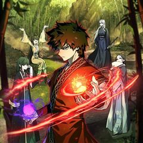
카카오웹툰천하제일인의 소꿉친구
정파를 배신하고 천마 휘하의 마인이 되어 버린 구양천. 마인으로서 살아가며 천마의 명으로 본인의 의지와는 상관없이 수많은 악행을 저지르고 후회로 점철된 인생을 살아가게 된다. 천마가 일으킨 정마대전. 정파의 삼존 존재마저 무릎을 꿇린 천마를 베어낸 위설아로 인해 길고 길었던 지옥 같은…
액션하렘카카오웹툰에서 보기 → -
4

-
5
 카카오웹툰
카카오웹툰수린당 성군전
[수린당 성군전] 선계와 인간계를 이을 단 한 명의 성군, ‘한울’. 지덕체를 두루 갖춘 완벽한 아이의 탄생에 선계의 신들은 신이 났다. 그것도 아주 지나치게! 과도한 기대는 때론 독이 될 수도 있는 법. 한울이를 금쪽이가 되지 않게 밝고 바른 아이로 키울 수 있을까? 성군의 운명을…
힐링카카오웹툰에서 보기 → -
6
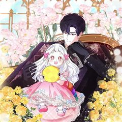
카카오웹툰뱀 가문의 막내딸입니다
"삐이—!" 알에서 겨우 깨어났더니 솜털 가득한 아기 새가 되어 있었다! 그런데 이 집, 새가 아니라 뱀 가문이잖아?! 게다가 식구들 상태는 더 이상하다. "어떤 놈이 내 딸을 울렸지? 당장 목을 비틀어#$%^" "아버지, 그냥 다 쓸어버리죠." 저기요… 전 괜찮은데요…? 살벌한 맹수…
힐링로판육아물카카오웹툰에서 보기 → -
7
 카카오웹툰
카카오웹툰픽 미 업!
그 누구도 던전의 끝까지 오르지 못한 극악의 난이도를 자랑하는 모바일 가챠 게임 <픽 미 업!(Pick me up!)> 마스터 오브 마스터라 불리는 세계 랭킹 5위의 마스터 '로키'는 던전을 깨던 중 정신을 잃게 된다. 깨어나 보니 레벨도 1, 등급도 1성인 <픽 미 업!> 속 영웅…
사이다액션게임판타지카카오웹툰에서 보기 → -
8
 카카오웹툰
카카오웹툰이번 생은 가주가 되겠습니다
“…한번 해 보자. 내가 가주가 되는 거야.” 제국에서 제일가는 가문, 롬바르디의 사생아로 환생한 피렌티아. 게다가 이 가문은 막대한 부는 물론 외교와 문화까지 통달한 말그대로 제국의 역사 자체! 금수저 오브 금수저 인생 당첨! 앞으로는 탄탄대로일 거라 생각했는데…. 아버지는 돌아가시…
사이다로판회귀카카오웹툰에서 보기 → -
9
 카카오웹툰
카카오웹툰타람 타람 타람
나긋나긋한 움직임으로 들어온 다온이 연회장 중앙에서 멈춰 섰다. 인형만큼이나 무미하고 감정 없는 얼굴이었다. 그럼에도 도도하고 우아해서 얼음 여왕처럼 강렬한 인상을 주었다. 엑서는 다리를 꼬며 낮게 웃었다. “지배자로서, 오늘 밤 널 안겠다.” 운명적인 첫 만남. 한눈에 반해버린 여자…
눈물샘자극설렘폭발로판시대물카카오웹툰에서 보기 → -
10
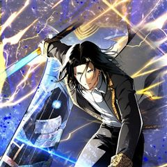
카카오웹툰검술명가 막내아들
진 룬칸델 대륙 최고의 검술명가, 룬칸델의 막내아들 룬칸델 역사상 최악의 둔재 비참하게 쫓겨나 허무한 최후를 맞이한 그에게 다시 한 번 기회가 주어졌다. “너는 이 힘을 어떻게 사용하고 싶더냐?” “저를 위해 사용하고 싶습니다.” 전생의 기억과 압도적인 재능, 그리고 신과의 계약 최강…
액션회귀카카오웹툰에서 보기 → -
11
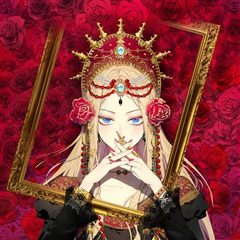
카카오웹툰잊혀진 들판
- 난 매일 기도해 이 사랑이 죽기를 오늘까지만 너를 사랑하고 내일은 이 사랑이 죽어 있기를 - 불륜으로 태어난 비운의 황녀, 탈리아 로엠 귀르타. 그녀는 무관심한 부모와 적대적인 이복형제들, 그리고 자신을 경멸하는 하인들 틈에서 일그러진 채 자란다. 다가오는 모든 이들에게 가시를 곤…
자극적인눈물샘자극로판카카오웹툰에서 보기 → -
12
 카카오웹툰
카카오웹툰템빨
[신영우 (유저 네임: 그리드)] 세계 최고의 가상 현실 게임 <SATISFY>. 현실에서나, 게임 속에서나, 불운은 항상 그의 곁을 맴도는데.... 퀘스트 수행 중 우연히 발견한 게임 속 로또, '파그마의 기서'. 20억 명이 넘는 유저 중 유일한 최강의 레전드리 직업으로 전직. "…
사이다학원물게임판타지카카오웹툰에서 보기 → -
13
 카카오웹툰
카카오웹툰쌍갑포차
예상치 못한 시간, 예상치 못한 장소에 나타나는 쌍갑포차! 쌍갑포차를 운영하는 월주는 과연 누구일까? 쌍갑포차에 찾아오는 다양한 손님들의 감동적인 이야기! 한국 전통 신화 이승과 저승을, 꿈의 세계 그승과 함께 재창조한 세계관으로, 덤덤하게 써 내려진 깊이 있는 사람들의 사연 속 조선…
공감눈물샘자극옴니버스카카오웹툰에서 보기 → -
14
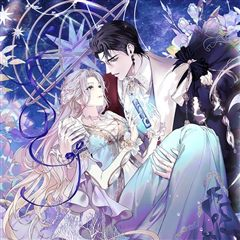
카카오웹툰너에게 빼앗을 왕관
내 평생을 바쳐 사랑한 사람. 그러나 사랑이라 믿었던 것은 배신이었고, 왕이었던 오라비는 나의 무지로 인해 죽었으며, 조국은 소리 없이 처참히 무너졌다. “다시… 돌아왔어.” 하지만 이번 생은 다를 것이다. 숙부에게 주어졌던 영광은 전부 빛을 잃을 것이며, 남편이 바랐던 찬란한 왕관은…
로판복수극카카오웹툰에서 보기 → -
15
 카카오웹툰
카카오웹툰황제궁 옆 마로니에 농장
'태양의 손'을 가진 농사 천재, 헤이즐 메이필드. 할아버지가 준 땅문서를 들고 설레는 마음으로 자신의 농장을 찾아가는데… "그 '대단히 높은 신분의 집주인'이… 황제였어?" 위대한 브라타니아 제국의 젊은 황제 이스칸다. 완전무결한 황궁을 꿈꾸던 그에게 닥친 최대 위기. "땅문서에 제…
힐링로판카카오웹툰에서 보기 → -
16
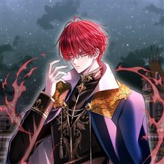
카카오웹툰블랙 헤이즈
오래전, 다른 세상과 통하는 「문」이 열리고 「표식」과 함께 특별한 능력을 얻은 자들을 「마법사」라 부르기 시작했다. '그날'의 사건 이후 큰 유명세를 치르고 있는 오피온의 1급 마법사 「블로우」. 어느 날, 아주 특별한 의뢰를 받게 된다. 그것은 바로 「마법 학교 헬리오스」에서 '괴…
학원물카카오웹툰에서 보기 → -
17
 카카오웹툰
카카오웹툰가드패스
평소 먹는 것을 좋아해 뚱뚱하고 큰 체격을 가진 '임세준'. 그는 뚱보라는 놀림에도 신경 쓰지 않는 자존감이 높고 확고한 성격을 가졌다. 그에게 단 한 명의 친구 '서하진'. 그녀는 어릴 적부터 세준을 지켜주기 위해 늘 운동을 배워왔다. 어느 날 세준은 같은 반 일진과 트러블이 생기고…
사이다학원물배틀카카오웹툰에서 보기 → -
18
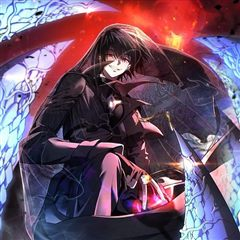
카카오웹툰만 년 만에 귀환한 플레이어
어느 날, 갑작스럽게 지옥으로 떨어졌다. 가진 것은 살고 싶다는 갈망과 포식의 권능 뿐. 일천의 지옥부터 구천의 지옥까지. 수만, 수십만의 악마를 잡아먹었고. 마침내 일곱 대공까지 그 앞에 무릎을 꿇었다. "어째서 돌아가려고 하십니까? 왕께서는 이미 지옥의 모든 것을 가지고 계시지 않…
액션게임판타지카카오웹툰에서 보기 → -
19
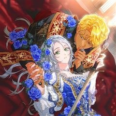
카카오웹툰결혼 장사2 ~잊히지 않을 노래~
고귀한 자리에 올랐으나 가족도 권력도 사랑도… 그 무엇도 가지지 못했던 왕, 시릴 드 세브랑. 유일한 구원이자 전부였던 알렉산드라를 지키지 못하고 죽임을 당했을 때, 그는 알 수 없는 힘에 의해 10년 전으로 되돌아가게 된다. 아직 알렉산드라가 아르노의 공녀로 기사의 꿈을 꾸며, 성자…
성장물로판타임슬립카카오웹툰에서 보기 → -
20
 카카오웹툰
카카오웹툰재앙급 영웅님이 귀환하셨다
지상에 최강의 영웅이 있었다. “하지만 죽었잖아. 우리가 죽인 놈이 어떻게 돌아와?” “그러게. 돌아올 수 있으면 한번 돌아와 보라지.” 그런데 20년 만에 진짜 돌아와 버렸다? “뭘 그리 놀래? 왜. 양심에 찔릴 짓이라도 하셨나?” 이 XX들. 가만 안 둔다.
사이다학원물복수극카카오웹툰에서 보기 → -
21
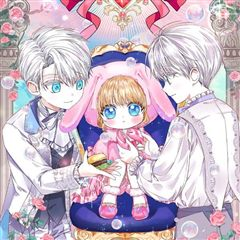
카카오웹툰아기는 악당을 키운다
세 번의 회귀. 4회차 인생. 운명의 아이로 선택되어 자랐으나 진짜 운명의 아이가 차원이동하여 나타나 그 아이를 위해 희생되는 삶이 반복된다. ‘이 나라는 노답이야. 망명하자.’ 망명 자금을 벌기 위해 입양되기를 택한 르블레인. 거기까진 좋았는데 입양된 곳이 하필이면 악당 가문이었다.…
로판육아물카카오웹툰에서 보기 → -
22
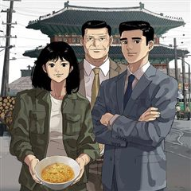
카카오웹툰면면면
1960년대 초 대한민국, 식문화의 일대 변혁이 일어난다. 전쟁 이후 굶주림이 일상이 된 국민들은 미군 부대의 잔반을 골라내어 끓인 꿀꿀이죽 한 그릇으로 하루 끼니를 때우던 상황. ‘전중윤’은 가난에 허덕이는 국민들의 삶, 그들의 제대로 된 한 끼 식사를 위해 전전긍긍하고 있었다. 카…
눈물샘자극성장물카카오웹툰에서 보기 → -
23
 카카오웹툰
카카오웹툰세이렌: 악당과 계약 가족이 되었다
아리아는 계약 결혼을 제안했다. 그것도, 악마에게 영혼을 팔았다는 발렌타인의 대공자에게. 자신을 지키고, 그를 지키기 위해서. [나와 결혼해.] 아리아는 단풍잎 같은 손으로 쪽지와 함께 혼인 서약서를 내밀었다. [계약 결혼이니까 10년 뒤에 이혼…….] 그러자 어린 대공자는 쓰고 있던…
로판회귀카카오웹툰에서 보기 → -
24
 카카오웹툰
카카오웹툰철혈검가 사냥개의 회귀
바스커빌 가문의 사냥개 '비키르'. 사냥개로서 가문에 충성한 보답은 모함과 누명으로 얼룩진 단두대의 칼날이었다. "다시는 토끼를 잡고 나면 삶아지는 사냥개처럼 살지 않겠노라." 그런 그에게 죽음 대신 찾아온 뜻밖의 기회. 어둠 속에서 송곳니를 갈고닦는 비키르의 눈이 붉게 빛났다. "기…
학원물복수극카카오웹툰에서 보기 → -
25
 카카오웹툰
카카오웹툰의원, 다시 살다
해외 의료 봉사를 갔다가 내전에 휘말렸다. 환자 대신 반군의 총을 맞고 간신히 눈을 떴는데 아니, 어린아이가 됐잖아?!? 눈앞에 있는 건 부서진 마차와 특이한 복식의 쓰러진 사람들! "꼭 무림 세계 같네." 한 명이라도 살리기 위해 응급처치를 하던 중, 이곳이 즐겨 읽던 무협 소설,…
힐링액션빙의카카오웹툰에서 보기 → -
26
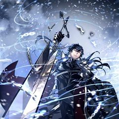
카카오웹툰회귀검가의 서자가 사는 법
강자존의 가문 라그나르의 서자 테오, 죽도록 노력했지만 재능이 부족하여 혈통의 사슬을 끊지 못하고 결국 왕좌경쟁에 밀려난다. 하지만 힘없는 서자 임에도 형제들은 테오를 제거하려 하였고 자신을 가르쳤던 스승에게 마저 배신당한 테오는 모든걸 잃어버리고 죽음을 맞는다. 최후의 순간, 삶의…
사이다학원물회귀카카오웹툰에서 보기 → -
27
 카카오웹툰
카카오웹툰적룡무제
압도적인 무력으로 천하무림을 일통한 무림의 절대지존 무제(武帝), 이환. 천수를 다하고 영면에 들었으나, 버림받은 황자의 몸으로 깨어나고 만다. 게다가 그의 모든 것이었던 대야성은 멸망하고 역사에서도 철저하게 지워진 뒤인데… “되돌려 놓으면 그뿐.” 잃었던 모든 걸 되찾고, 천하에 군…
사이다액션빙의카카오웹툰에서 보기 → -
28
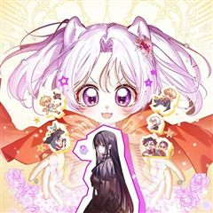
카카오웹툰악녀 언니를 구하러 온 용감한 강아지입니다
내 이름은 코코. 하얗고 복슬복슬한 털이 아주 멋진 강아지죠. “다음 생이 있다면 부디 언니 딸로 태어나 줘. 응?” 언니와 행복한 견생을 보내고, 무지개 다리를 건넜는데. '헉, 내가 죽은 후에 언니가 맨날 울기만 하잖아!' 안 돼! 우리 언니의 행복한 삶은 용감한 강아지가 지킨다!…
로판인외존재카카오웹툰에서 보기 → -
29
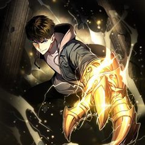
카카오웹툰영웅, 회귀하다
인류 최강의 영웅, 김성인. 모든 것을 내던지며 분투했지만 결국…… 세상의 멸망은 막지 못했다 하지만 그의 전설은 이제 시작이었으니 성인, 20년 전으로 회귀하다! “이번에는…… 반드시 잡는다.” 압도적인 재능과 경험으로 무장한 완전체 영웅의 레이드는 아직 끝나지 않았다!
액션회귀카카오웹툰에서 보기 → -
30
 카카오웹툰
카카오웹툰갓 오브 블랙필드
"Who am I?" 프랑스 외인부대의 전설 '강찬'! 아프리카 전장에서 그를 상대한 자들은 공포와 경외를 담아 '갓 오브 블랙필드' 검은 땅의 신이라 불렀다. 하지만 수니파 추종 세력 SISS의 수뇌인 마살란 사살 작전에 투입된 강찬은 배후에서 날아든 의문의 총알에 전사하게 되고,…
서스펜스액션전쟁카카오웹툰에서 보기 →